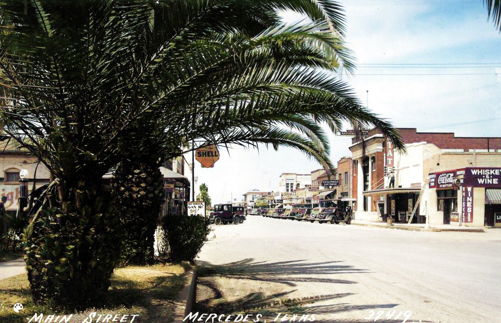
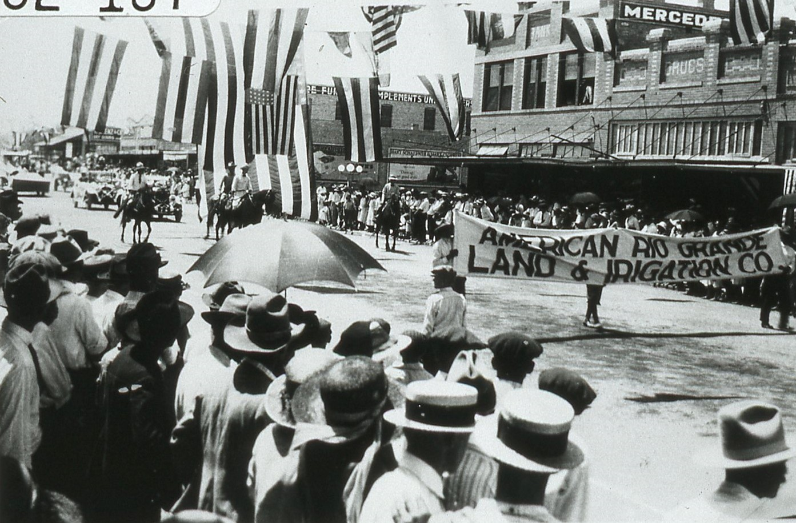
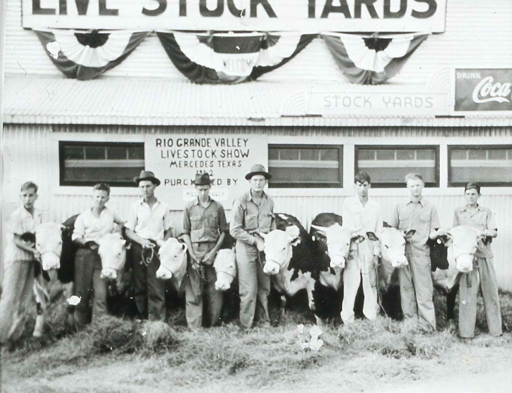

X001 A-MUZ-U Theater near Camp Llano Grande West of Mercedes 1916
X001 A-MUZ-U Theater near Camp Llano Grande West of Mercedes 1916
Theaters and cafes popped up near Mercedes to entertain the soldiers and servicemen at Camp Llano Grande. The A-MUZ-U Theater was a popular destination. It would have been showing silent movies as talkies were not available until the mid 20's. Eateries such as the Cold Milk and Pie Shop were also been popular destinations for the soldiers.
According to the Mercedes Tribune in August 1917, soldiers from Indiana hosted an Indiana Night benefit at the A-Muz-U theater to raise money for the Camp Llano Grande YMCA building. Three home movies from Indiana were shown: a garden dance party given by one of the soldier's cousins, the funeral of an Indiana poet, and footage of a Indiana University vs Perdue football game. [47]
View Enlarged View Library
 X002 Soldiers from Camp Llano Grande entering the A-MUZ-U Theater 1916
X002 Soldiers from Camp Llano Grande entering the A-MUZ-U Theater 1916
In this photograph, soldiers from Camp Llano Grande near Mercedes are entering the A-MUZ-U Theater. The theater is covered with film posters and signs advertising 'Home Made Ice Cream and Very Best Lemonade.' The Western Queen, another theater, is located to the right. According to a local newspaper from 1917, there was also another theater behind the camp, the Broadway, and that 'soldiers thronged the theaters each night from the time supper mess kits are cleaned until the bugle sends them home.' At the time, only silent movies were available. The Western Queen accompanied the movies with music, which the soldiers enjoyed very much. [47]
Prohibition did not pass until several years after this photograph was taken, but there are no bars or signs for liquor or alcohol. It is possible that speakeasies existed but did not have signs to mark their presence.
View Enlarged View Library

L007 State Theater, Whiskey, Wine and Coca-Cola on Texas Avenue and 4th in the 1940s 1940
Looking Northeast from Texas Avenue and 4th Street in Mercedes are several businesses in buildings that are still there today. The Whiskey and Wine building was the Vogue Ladies Store for several decades. Look closely at the photograph to see a man changing the marquee at the State Theater, which was started by Amzi Stuart. His son Herald inherited the theater and kept it open until the 1960s.
The First National Bank was founded around 1910 and moved to the corner of Texas and 2nd in the early 1960s. The Central Power & Light and Porter Telegram businesses are next. The Shell Gas Station across the street has a sign for 'No Knock' gas 16 cents/gallon. The addition of lead to gasoline as an antiknock agent was recognized as a serious health hazard and banned in the United States in the 1970s.
View Enlarged View Library
 Q008 Bougainvillea Restaurant Was Located On US 83 and Mile 2 West 1950
Q008 Bougainvillea Restaurant Was Located On US 83 and Mile 2 West 1950
The Mercedes Enterprise reported that the Bougainvillea Restaurant opened on Friday, October 10, 1947, and served 'Chickens, Steaks, Chops and Seafoods at all Hours.' Mr. and Mrs. Al Strittmatter owned the restaurant which was located 'just past the highway bridge west of Mercedes'. [48] Its red tile roof, stucco exterior and Bougainvillea plant for which it was named, nodded to Mission style which was popular in the Mercedes area.
Local businesses Model Cleaning, Tullis Office Supply, Mercedes Sheet Metal Work, and Economy Plumbing took out large ads in the newspaper to welcome the new business to town. The restaurant was a popular spot for both dining and social gatherings. It closed in the 1960s and the empty building stood for many years before being demolished.
View Enlarged View Library

W045 Mercedes Livestock Show Parade 1920
In this photo, members of the American Rio Grande Land and Irrigation Company take part in the annual Livestock Show Parade. The earliest known reference to a livestock show in a Mercedes newspaper appeared in the Mercedes Tribune in 1914. It encouraged community participation with the advertisement: “Help demonstrate what the Lower Rio Grande Valley can do in agriculture, horticulture, and livestock by exhibiting your best products at the Rio Grande Live Stock Show and Fair at Mercedes.
View Enlarged View Library

W040 Rio Grande Valley Livestock Show 1942
Ranchers showing bulls at 1942 Rio Grande Valley Livestock Show and Agricultural Exposition. The first show was organized as a project of the Mercedes Chamber of Commerce. Early shows were held on the grounds of a local livestock sales yard with makeshift pens and lean-to sheds. The show continued to be held on this same property until 1949, when it moved to its present location at 1000 North Texas in Mercedes,
View Enlarged View Library
 K002 Cover Girl Contestants, RGV Livestock Show of Mercedes 1955
K002 Cover Girl Contestants, RGV Livestock Show of Mercedes 1955
The livestock show became an annual event that featured the Cover Girl Beauty contest. The fortunate contest winner's photograph was featured on the livestock show's cover, hence the name Cover Girl. The 1955 Cover Girl winners are featured in this postcard. The Ad copy on the back of the postcard reads: SUPPORT YOUR CHURCH for a BETTER U.S.A. A few of the girls featured in the Cover Girl Contest conducted each year in the Valley Livestock Show and Rodeo, Mercedes, Texas, in the Rio Grande Valley of South Texas.
View Enlarged View Library
 K003 Cover Girl Contest Winners, RGV Livestock Show of Mercedes 1955
K003 Cover Girl Contest Winners, RGV Livestock Show of Mercedes 1955
In 1949, the Rio Grande Valley Livestock Show moved to its current location at 1000 North Texas in Mercedes. This postcard shows the1955 Cover Girl Beauty Contest winners. The copy on the back of the postcard reads: The four top winners in the Cover Girl Contest held annually at Mercedes, Texas, during the Lower Rio Grande Valley Livestock Show. The entire Valley joins Mercedes each year in the celebration of their event.
In addition to being members of either FFA or 4-H, Cover Girl contestants were required to have an animal or agricultural project entered in the livestock show. The Rio Grande Valley Livestock Show and the Cover Girl beauty contest are still held annually today, in 2023.
View Enlarged View Library
 Q010 Nuevo Record Company Publicity Postcard from Mercedes Band 1960
Q010 Nuevo Record Company Publicity Postcard from Mercedes Band 1960
Publicity postcard for Mercedes native Gilberto Perez y Sus Compardres on their trip to Florida in the 1960s. Gilberto Pérez founded his band in 1959 and it became one of the most renowned bands in the Conjunto music genre. Gilberto said that many of his songs reflect on his life in Mercedes. For 60 years, he and his band toured throughout the United States and Mexico to packed dance halls at many events. He was celebrated with special honors, including induction into the Texas Conjunto Music Hall of Fame and Museum, and shared the stage with almost every major figure in Tejano and Conjunto music during his career. [64]
View Enlarged View Library
 Q011 El Sombrero Restaurant was Mercedes Gathering Place for Many Years 1960
Q011 El Sombrero Restaurant was Mercedes Gathering Place for Many Years 1960
The El Sombrero Restaurant was known for its delicious enchiladas and steaks. Its function room was a popular gathering place for civic organizations and celebrations. Wayne and Margaret Love owned and managed the restaurant for many years. Their motto was 'Because you LOVE good food'. The restaurant closed sometime in the 1980s and the structure has been demolished.
The advertising copy on the back of the card says 'Located on the Lower Rio Grand Valley Main Street- Highway 83, Mercedes. Specializing in Charcoal Broiled Steaks and Mexican Food. Private Dining Rooms serving small groups or 200. Lunches - Food to go - Dinners - Seafoods l Nationally Famous Strawberry Pie. Telephone LO 5-2282.
View Enlarged View Library
{kind=link}
{kind=link}
{kind=link}